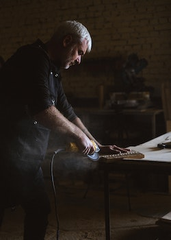

O nama
Stolarija Perun je počela sa radom krajem 2012. godine. Tada, naravno, naša znanja nisu bila toliko velika kao danas, ali mi smo se trudili i tad kao i danas da Vama, mušterijama, ponudimo najbolje koliko smo mogli. Nadenuli smo ime našoj stolariji ime Perun po slovenskom bogu pravde, gromova i oluja. Sveto drvo Peruna prema našim precima bio je hrast, te i mi dosta naših radova radimo baš na ovoj vrsti drveta. Ovako pokušavamo da sačuvamo nasleđe naših predaka i da novijim generacijama pokažemo to na autentičan način. Što se tiče naše proizvodnje, nudimo Vam pravljenje sve vrste nameštaja od najmanje klupe do najvećeg ormana i kvalitet u koga se nećete razočarati, a sem proizvodnje nudimo i popravke i prepravke raznih drvenih proizvoda.
